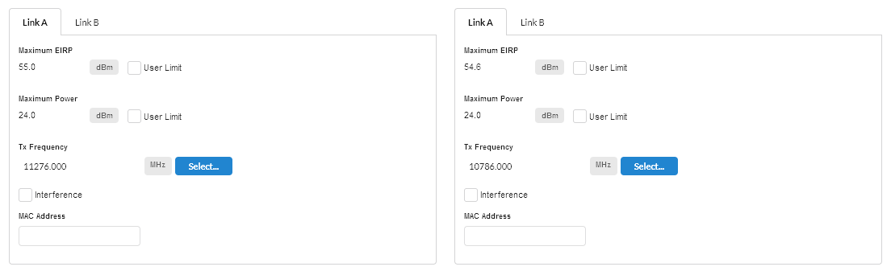

2+0 single antenna is available on PTP 820 and PTP 850 links. How to configure 2+0 depends on the product:
PTP 820S, PTP 820G and PTP 850E require two RFUs at each end of the link to operate either through a common coupler to a single antenna or a dual polar antenna to provide two parallel links between two sites.
PTP 820C, PTP 820A with RFU-D and PTP 850C require a single RFU and either an OMT or splitter with a single polarity antenna.
For a more detailed understanding of 2+0 Single Antenna, see the appropriate product User Guide.
2+0 single antenna sharing requires the two pairs of frequencies to be in the same sub-band. For narrow sub-bands not all bandwidths options are available.
2+0 single antenna can be enabled as described in Link Description and Equipment, for 2+0 Co-Polar (ACCP), 2+0 Cross-Polar (ACAP) and 2+0 XPIC (CCDP).
The Equipment and Product Configuration sections are common for Link A and Link B, with the following exception:
Polarization, which is the same for both links when 2+0 Co-Polar (ACCP) Link type is selected and is reversed from Link A to Link B when 2+0 Cross-Polar (ACAP) or 2+0 XPIC (CCDP) Link Type is selected.
XPIC is only valid on LOS links, if the link has any Excess Path Loss the Throughput and Availability predictions will be set to zero. The link must be LOS in order to achieve the required polarization discrimination for XPIC operation.
The parameters at each end for each link can be configured as described in Configuration at Each End. Some parameters are common to both links and are only shown once.
Antenna Type: The antenna type will always be the same for both links.
Antenna Height: The antenna height will always be the same for both links.
Feeder Loss: This field will always be the same for both links. In the case of 2+0 Co-Polar this field will incorporate the coupler loss in addition to any waveguide loss, for an ODU. The symmetric coupler will have the same loss for both links (maximum 4.5 dB).
The following parameters can be different for both links and are set on tabs for Link A and Link B
Maximum EIRP: This field can be set independently for the two links.
Maximum Power: This field can be set independently for the two links.
Tx Frequency: This field must be different for Link A and Link B for 2+0 Co-Polar and 2+0 Cross-Polar. 2+0 XPIC uses the same Tx Frequency for both links and hence the value will always be the same for both links.
Interference: This field can be set independently for the two links.

Configuration at Each End for Link A and Link B tabs¶
The performance summary information for each link is shown on the Aggregate, Link A and Link B tabs. For all products the required performance parameters can be set independently for each link and are defined in the usual way, see Performance Summary. If the predicted performance of the main link(aggregate) or either link is below requirements, then the respective link tab will be displayed in red.
The reports for 2+0 configurations are created in the same way as for a 1+ link, see Creating Reports. In the installation report, where the equipment is common to both Link A and Link B, the information in the installation notes is only given once. PTP 850 and PTP 820 reports contain the performance of the aggregate link and the installation information required for both links.